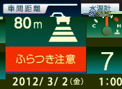

安全・品質向上への取り組み
四国のバス会社で初の
国際規格『 ISO39001（道路交通安全）』認証を取得！

私達が責任を持って
お客様の安全を支えます。
-

統括運行管理者
取締役 西川晋平 -

コンプライアンス担当
宮本育志 -
徳島営業所所長
岡本清 -

指導乗務員
岡本功
ISO39001について
ISO39001は、道路交通事故による死亡・重傷事故ゼロの安全な社会を実現することを目的としています。世界における道路交通事故による死亡者は、年間約130万人以上、負傷者は、年間5000万人以上とも言われ、国際的に道路交通安全への取組みが注目されています。こういった背景から、世界中で最も信頼され得る道路交通安全の国際規約として、2012年10月にISO39001が発行されました。
キレイで安全なバスの旅を
運行管理体制
コトバスでは、24時間の万全の運行管理体制を整えております。運行中の管理はもちろん、運行前後の点呼ではドライバーの各々の体調管理・安全指導を確実に行っております。
-

アルコールチェック
乗務の開始前、終了後の点呼において、乗務員の顔色、呼気の臭い、応答の声の調子を目視等で確認することに加え、アルコール検知器を使用して酒気帯びの有無を確認しています。
-
点呼
乗務の開始前には運行管理者が必ず点呼を行い、乗務員の体調、運行経路の確認、免許証の確認、アルコールチェックを行っています。
-
車両の点検
乗務員が始業前に、安全運行を支えるために適切な点検を行っています。また、高速道路ではサービスエリアでの休憩ごとに、乗務員が車両の安全点検を実施しています。運行後には異常がないか点検を行います。
-
デジタルタコグラフ
デジタル式の運行記録計のことで、バスの運行速度や運行時間等を自動的に記録するものを搭載しています。それにより、乗務員の癖を読み取り、安全運行への指導に利用しています。また、エコドライブを心がけることにも効果があります。
-
ドライブレコーダー
映像記録を行うドライブレコーダーを搭載しています。それにより、乗務員は安全運転を心がけようと意識し、安全運行の向上に繋がります。
-

洗車
運行後は、翌日のお客様が気持ちよく乗車できるように乗務員が丁寧に車内の清掃及び車両の洗車を行っています。
乗務員の質の向上を目指して
-
安全指導
事故原因分析やヒヤリ・ハット事例を乗務員間で共有するために、定期的にミーティングを開催し、安全性の向上に努めています。
-

社員研修
乗務員全員が集まり、乗務員の質の向上を目指して、必要な運転技術の基礎の振り返り、自分の運転の癖等を見つめ直す訓練、教官が添乗しての教育等に力を注いています。
-

無事故運転表彰・優秀乗務員表彰制度
運転事故防止に努めた乗務員には無事故運転表彰を行っています。また、実践に努力を重ねた乗務員に対し優秀乗務員表彰を行っています。
サービスの質の向上を目指して
サービス品質向上への取り組み
より安心してご利用頂けるサービスを提供するために、接客・接遇においてもプロジェクトチームを組んで外部講師と共に常に改善を行っております。プロジェクトチームが中心となり、マニュアルの作成・実地研修・講習会の開催などを行っております。
安全を実現するために
安全性の高い車両を積極導入
コトバスでは安全性能の高い最新車両を順次導入しています。高速バス定期便で運行する車両は全て「ニューセレガ＆ガーラ」。そのうち、東京線・福岡線・名古屋線車両にはＰＣＳ（衝突被害軽減ブレーキシステム）・車両ふらつき警報・ＶＳＣ（車両安定制御システム）等、最新の安全装置を搭載しています。
※貸切車両はニューセレガ＆ガーラが11両、そのうちＰＣＳ等の最新安全装置搭載車は6両となります。
-
不安定な運転を警告。車両ふらつき警報
 ハンドル操作のふらつき具合の増大を検知すると警報を出し、ドライバーに休息を促します。警報が続くとPCSの作動を早めます。

-
横転や雪道などの滑りやすい路面における危険を抑止。
VSC※1 「車両安定制御システム」VSC=Vehicle Stability Control
カーブでの車線のはみ出しや横転などを抑制するため、警報音やエンジンの出力制限、ブレーキ作動で、ドライバーの回避操作を的確にサポートします。
-
車間距離がチジマると警報。ニューセーフティアイ。

先行車との車間距離が安全車間距離以下になると、マルチインドメーションディスプレイに警報が表示され、ブザーで警報します。
-
万一の際にも後方車両に警告。緊急制動灯機能。

フットブレーキやPCSにより急ブレーキがかかった場合、ストップランプが点滅。さらに万一衝突した際はハザードランプが点滅して、後方車両に注意を促し2次被害を軽減する緊急制動灯を装備しました。
PDCAサイクル
「安全は全てに優先する」ために計画（Plan）、実行(Do)、評価(Check)、改善(Act)の４つの構成を基準とし、予測しうる危機的な事態を回避、あるいはそのことによる被害を最低限にとどめるように取り組んでいます。
コトバスの安全・品質向上ついてのFAQ
- 乗務される前の確認はどのような事をされてますか？
-
全運行会社が乗務する前には運行管理者が必ず点呼を行い、乗務員の体調、運行経路の確認、免許証の確認、アルコールチェック機を利用した飲酒検査を行っています。
- バス車輌の安全点検はされてますか？
-
乗務員が始業前点検を行い整備管理者がその確認を行っています。
また、高速道路ではサービスエリアでの休憩ごとに、乗務員が車輌の安全点検を実施しています。 - バス乗車中に運転等に不安があった場合はどうしたらよいですか？
-
乗車中に何か不審なことや、心配なことがあれば緊急連絡先を設けています。係員が24時間体制でお客様からのご連絡に対応します。また、お客様アンケートをバス車内に設置致しておりますので、お気づきの点が御座いましたら「お客様の声」をお寄せください。